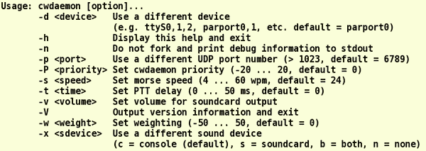

|
WARNING!
Backup your data often! BACKUP your log directory at the end of EVERY session!
All that you need to backup and store in a safe place is the log database directory
located in the ~/.config/cqrlog/database folder, or you can enable the autobackup function
in Preferences. This autobackup function creates an ADIF file with a backup of your log.
|
CQRLOG for LINUX by OK2CQR & OK1RR
cwdaemon setup
cwdaemon is a very good software trick which does a good job if
you build your own kernel and you also don't need to fire it up separately with root
privileges if you have an addition in your start-up scripts.
Poor sounding CW
Sloppy CW from the cwdaemon it depends on kernel settings. I tested it thoroughly because I love CW at higher
speeds. Latency of 1000 Hz helped a bit, I was able to run at usual contest speeds up to 36 wpm. Since kernel 2.6.23
the problem seems cured with tickless kernel. Here is an excerpt from my config:
# # Processor type and features #
CONFIG_TICK_ONESHOT=y
CONFIG_NO_HZ=y
CONFIG_HIGH_RES_TIMERS=y
CONFIG_SMP=y
CONFIG_X86_PC=y
....
Now I can go up to 60 WPM and the resulting CW is excellent,
however I'm using cwdaemon 0.9.4beta1. Versions below 0.8 are actually useless,
the worst CW I ever heard was produced by cwdaemon 0.5 and an unmodified kernel.
The newest cwdaemon 0.9.4 depends on unixcw version 2.3 (or above) which won't
compile on my Slackware system (and I was not patient enough to track all the dependencies),
therefore not tested. I believe that the new dependency was a bad step back...
I hope that new versions of cwdaemon will continue the way set by the 0.9.4beta1 version
(source download here). Anyway, with this version of cwdaemon and custom made kernel 2.6.23
(and higher) I am fully satisfied. I am convinced that any development of CW related
software should be thoroughly tested by high speed freaks, it is rather bad if a developer
or tester means he did well if he is limited by 25 WPM...
Start-up without root privileges
There is no need to start cwdaemon separately with root privileges.
Put a little addition in your start-up script and cwdaemon will start without any keystroke.
It is a good solution for a ham radio machine, however you may have some problems if you want
to use your parallel port for printing or other purposes.
I added two simple blocks to the /etc/rc.d/rc.local
which applies to Slackware GNU/Linux, however your preferred distribution may use another
name and location.
The first block is used to load parport and parport_pc modules which are essential to
cwdaemon. The second block actually loads cwdaemon. First, it stops the module which
can block your parallel port - here it was cups. cwdaemon also won't work if the lp module
is loaded, so unload it if necessary. Next, a device node is created and cwdaemon is loaded.
#load parport, parport_pc
modprobe parport
modprobe parport_pc
# Load cwdaemon
echo "starting cwdaemon"
/etc/rc.d/rc.cups stop
# rmmod lp
cd /dev
mknod -m 0660 parport0 c 99 0
/usr/local/sbin/cwdaemon -x n
Remember the cwdaemon options:

I find it useful to start cwdaemon without any sidetone, it seems much better to use
the sidetone of your radio rather than the PC speaker.